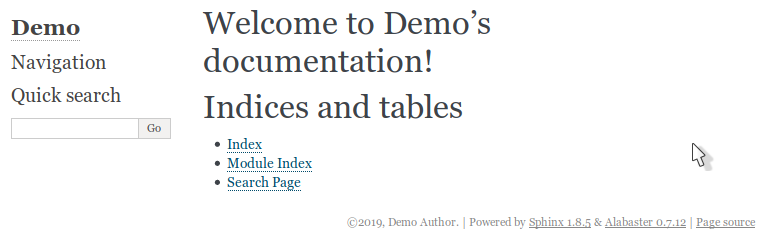
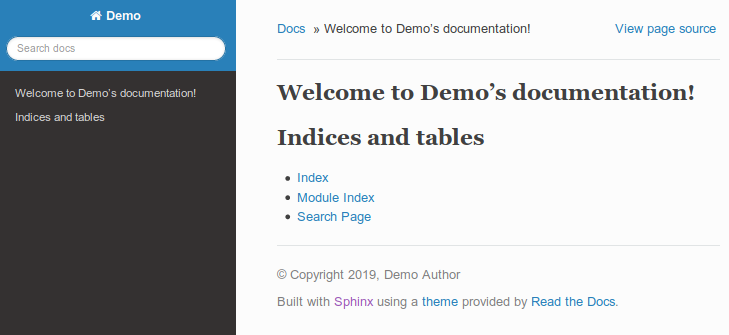

Non TYPO3 usage¶
This page
Interactive Bash shell with user permissions¶
Save as
bash-shell-as-user.sh:# bash-shell-as-user.sh mkdir -p Documentation-GENERATED-temp docker run --rm -it\ --entrypoint /bin/bash \ --user=$(id -u):$(id -g) \ -v $(pwd):/PROJECT:ro \ -v $(pwd)/Documentation-GENERATED-temp:/RESULT \ t3docs/render-documentation:v2.3.0
Become an ordinary user in the container and enter the Bash shell. Run:
source bash-shell-as-user.sh
In the container goto /RESULT
Create a file
helloworld.txtLeave the container.
Find the resulting on your host machine. It has your user permissions.
The whole process looks like this:
➜ ~ source bash-shell-as-user.sh
groups: cannot find name for group ID 1000
(venv) I have no name!@bb011cb1e64f:/ALL/venv$ cd /RESULT/
(venv) I have no name!@bb011cb1e64f:/RESULT$ echo Hello world > helloworld.txt
(venv) I have no name!@bb011cb1e64f:/RESULT$ exit
exit
➜ ~ ls -la Documentation-GENERATED-temp
total 12
drwxrwxr-x 2 marble marble 4096 Aug 19 12:27 .
drwxr-xr-x 113 marble marble 4096 Aug 19 12:27 ..
-rw-r--r-- 1 marble marble 12 Aug 19 12:27 helloworld.txt
➜ ~
Tip
In container version 'develop' (v2.4-dev) there is a new shortcut for this:
# enter the container's Bash shell with user permissions
dockrun_t3rd /usr/bin/bash
Quickstart your own plain Sphinx project¶
Enter the user shell - see paragraph Interactive Bash shell with user permissions
Go to /RESULT
Run
sphinx-quickstartand answer the questions:> Separate source and build directories (y/n) [n]: y > Project name: Demo > Author name(s): Demo Author
For all other questions just press ENTER.
Show what Sphinx has to offer for your new project:
(venv) I have no name!@ab7a2ae25a9c:/RESULT$ make Sphinx v1.8.5 Please use `make target' where target is one of html to make standalone HTML files dirhtml to make HTML files named index.html in directories singlehtml to make a single large HTML file pickle to make pickle files json to make JSON files htmlhelp to make HTML files and an HTML help project qthelp to make HTML files and a qthelp project devhelp to make HTML files and a Devhelp project epub to make an epub latex to make LaTeX files, you can set PAPER=a4 or PAPER=letter latexpdf to make LaTeX and PDF files (default pdflatex) latexpdfja to make LaTeX files and run them through platex/dvipdfmx text to make text files man to make manual pages texinfo to make Texinfo files info to make Texinfo files and run them through makeinfo gettext to make PO message catalogs changes to make an overview of all changed/added/deprecated items xml to make Docutils-native XML files pseudoxml to make pseudoxml-XML files for display purposes linkcheck to check all external links for integrity doctest to run all doctests embedded in the documentation (if enabled) coverage to run coverage check of the documentation (if enabled) (venv) I have no name!@ab7a2ae25a9c:/RESULT$
Run some builders for your new project.
html:
(venv) I have no name!@ab7a2ae25a9c:/RESULT$ make html Running Sphinx v1.8.5 making output directory... building [mo]: targets for 0 po files that are out of date building [html]: targets for 1 source files that are out of date updating environment: 1 added, 0 changed, 0 removed reading sources... [100%] index looking for now-outdated files... none found pickling environment... done checking consistency... done preparing documents... done writing output... [100%] index generating indices... genindex writing additional pages... search copying static files... done copying extra files... done dumping search index in English (code: en) ... done dumping object inventory... done build succeeded. The HTML pages are in build/html. (venv) I have no name!@ab7a2ae25a9c:/RESULT$
epub:
(venv) I have no name!@ab7a2ae25a9c:/RESULT$ make epub Running Sphinx v1.8.5 making output directory... loading pickled environment... done building [mo]: targets for 0 po files that are out of date building [epub]: targets for 1 source files that are out of date updating environment: 0 added, 0 changed, 0 removed looking for now-outdated files... none found preparing documents... done writing output... [100%] index generating indices... genindex writing additional pages... copying static files... done copying extra files... done WARNING: conf value "version" should not be empty for EPUB3 writing mimetype file... writing META-INF/container.xml file... writing content.opf file... writing nav.xhtml file... writing toc.ncx file... writing Demo.epub file... build succeeded, 1 warning. The ePub file is in build/epub. (venv) I have no name!@ab7a2ae25a9c:/RESULT$
and so on. Try the other builders.
Exit the container:
(venv) I have no name!@ab7a2ae25a9c:/RESULT$ exit exit ➜ ~
Show a build result in the browser:
firefox Documentation-GENERATED-temp/build/html/index.html
Sphinx has built html files for your new project with theme
alabaster. This is the default theme Sphinx uses.
Use the well know ReadTheDocs theme¶
The current stable version 0.4.3 of the ReadTheDocs theme is already installed in our container. So you don't have to do downloads and extra installations yourself. All you have to do is tell Sphinx that you want to use that theme.
Edit Documentation-GENERATED-temp/source/conf.py on your computer or
/RESULT/source/conf.py in the container. It is the same file.
Find line:
html_theme = 'alabaster'
Change the line to:
html_theme = 'sphinx_rtd_theme'
Enter the shell in the container and run the make commands again.
Look at the new result:
